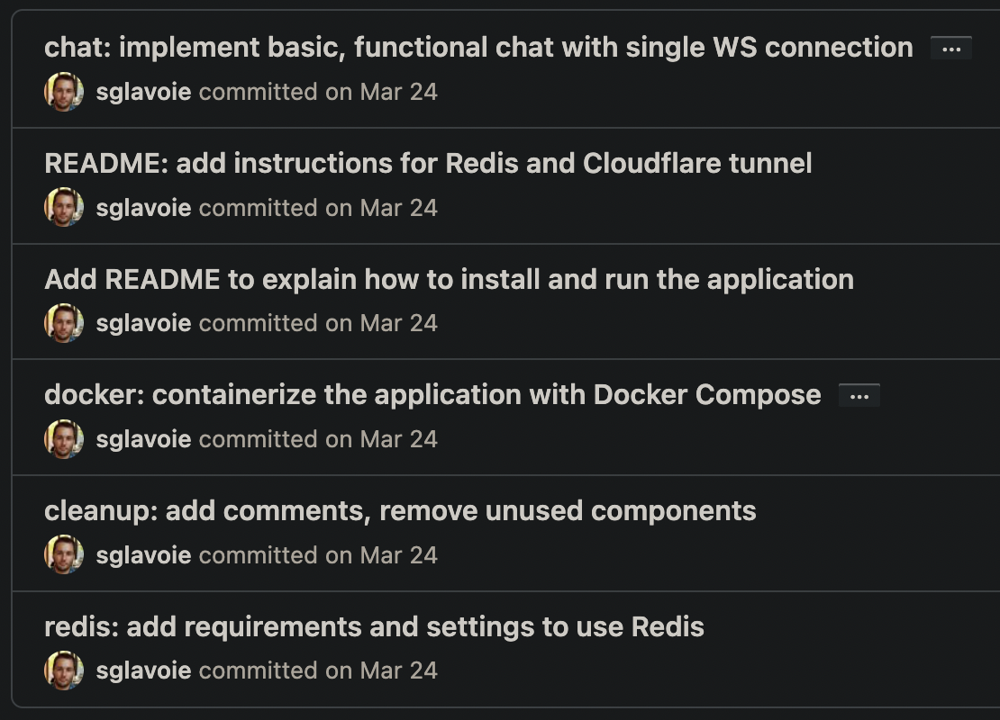
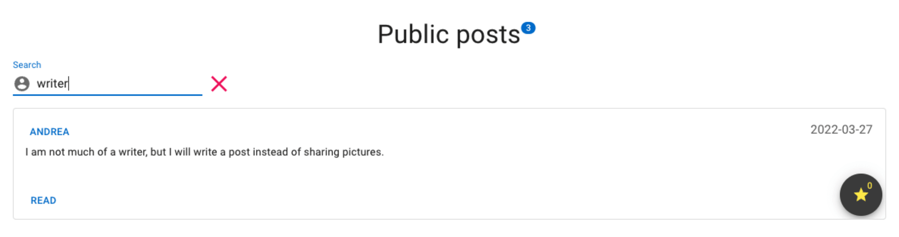
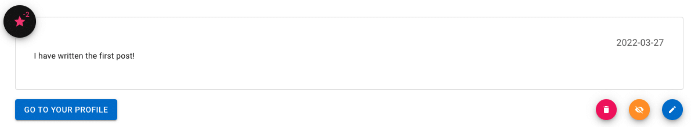
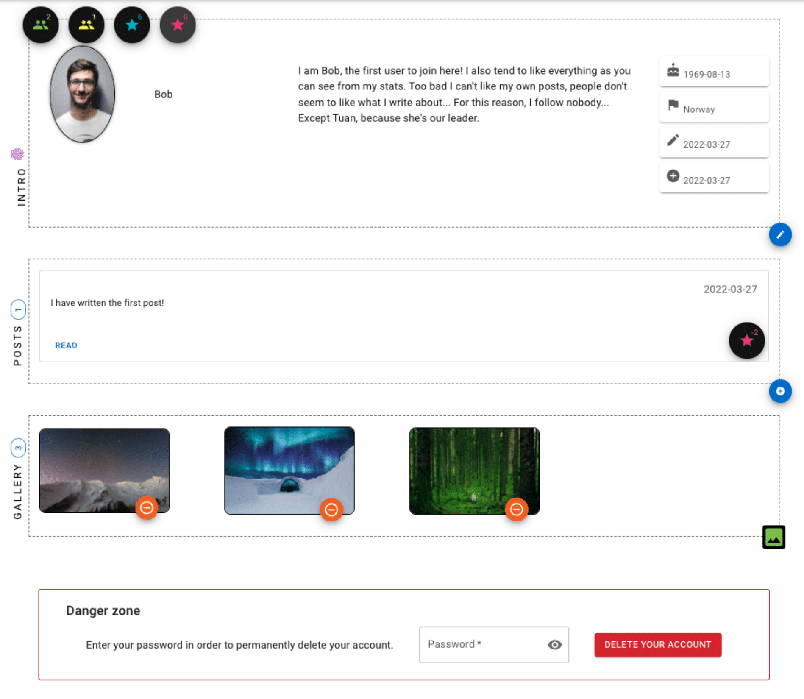
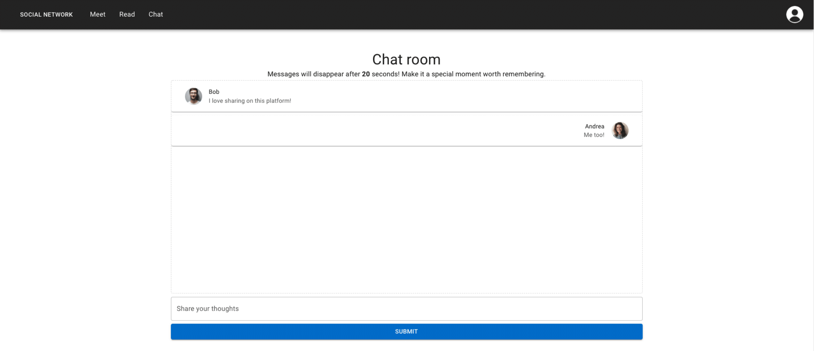
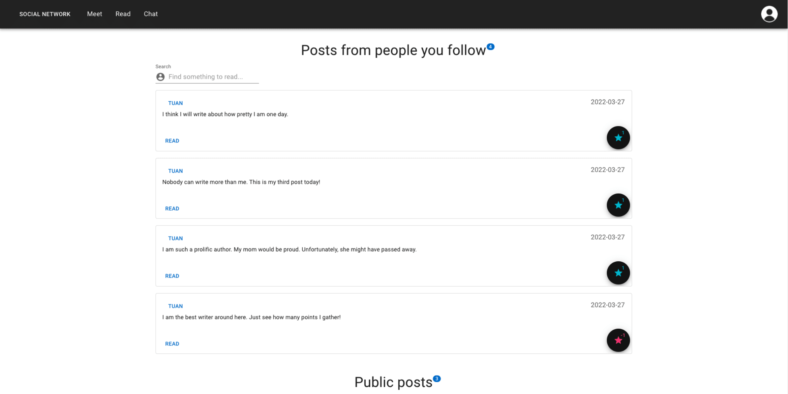
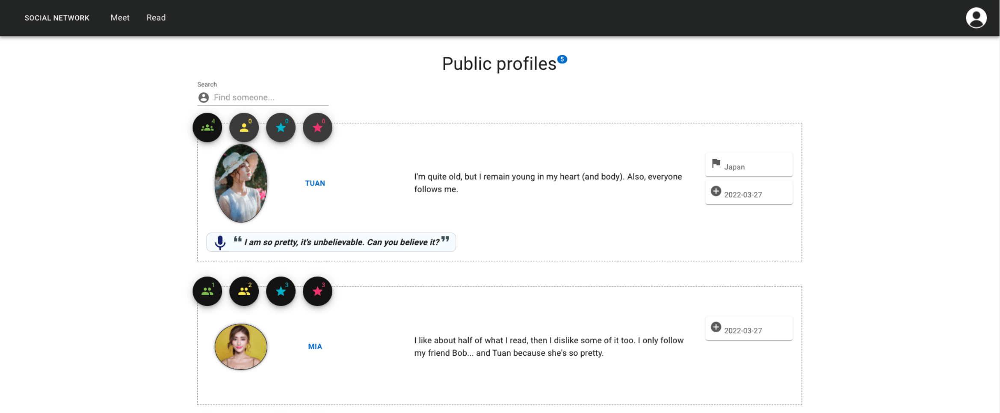
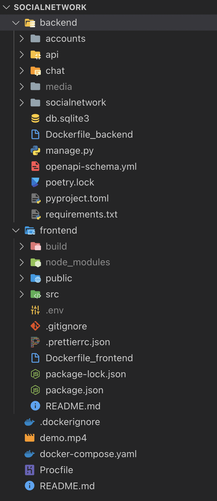

Table of contents
Introduction
The following is a report that was part of a project I delivered during my BSc in computer science, reformatted from LaTeX to Markdown. While not being utterly interesting (unfortunately, the source code cannot be freely published due to the nature of the work…), it gives a glimpse of my thought process while building this Django website. I have learnt a few lessons from it and maybe, with some imagination, you might too :). To read a nicely formatted version of this article, you can refer to the original report instead.
Meeting the requirements
In order to meet all the requirements when building this application, a few different techniques, strategies and concepts were put to good use. Firstly, all Django views are class-based and rely on Django REST Framework to reduce the boilerplate needed to write the views. One such (simple) view is shown below:
class Profiles(APIView):
"""Used when listing all profiles at once."""
# allow everyone to see all basic profiles
permission_classes = [IsOwnerOrReadOnly]
def get(self, request):
profiles = UserProfile.objects.all().order_by("-id")
serializer = ProfileSerializer(profiles, many=True)
return Response(serializer.data)
All views in turn rely on serializers to parse incoming data and to transform it into appropriate structures that can be used internally by Django. Some serializers are obviously more complex than others, but for demonstration purposes and for the sake of brevity, an example of a class-based serializer is reproduced here:
class UserPublicSerializer(ModelSerializer):
"""Serializer the User model to get back user information that can
safely be shared around in the application to other users."""
# We need easy access to the profile image when listing all profiles
# at once
profile_image = SerializerMethodField()
class Meta:
model = User
fields = ["id", "name", "profile_image"]
def get_profile_image(self, obj):
return obj.userprofile.image.url
The actual implementation details for signals, forms, URLs, other views and components can be explored in the source code submission provided with this report.
When it comes to version control, Git was used religiously with GitHub to host a private repository. The Conventional Commits specification was followed to help create meaningful commit messages.

Defensive coding strategies were used, both in Python and in JavaScript. In the backend, exceptions were raised directly where no appropriate actions could be taken:
def clean_email(self):
"""Verify that the email is available."""
email = self.cleaned_data.get("email")
query_set = User.objects.filter(email=email)
if query_set.exists():
raise forms.ValidationError("email is taken")
return email
In the views, conditional statements were sprinkled everywhere where necessary to avoid expansive computations (e.g., processing a profile image when the request is invalid) and to return early from functions:
# ...
if profile is None:
return Response(
"Profile not found!", status=status.HTTP_404_NOT_FOUND
)
if profile.user.id != request.user.id:
return Response(
"You do not have the required permissions "
"to update this profile!",
status=status.HTTP_401_UNAUTHORIZED,
)
serializer = ProfileUpdateSerializer(profile, many=False, data=data)
if serializer.is_valid():
serializer.save()
return Response(serializer.data)
# ...
On the frontend, a kindred approach was used to assemble robust requests:
try {
const response = await axios.post(
`${process.env.REACT_APP_API_URL}/auth/jwt/verify/`,
body,
config,
)
if (response.data.code !== "token_not_valid") {
dispatch({
type: AUTHENTICATED_SUCCESS,
})
} else {
dispatch({
type: AUTHENTICATED_FAIL,
})
}
} catch (err) {
dispatch({
type: AUTHENTICATED_FAIL,
})
}
With security in mind, views were by default protected and accessible only to authenticated users unless a statement such as the following allows all users to read an endpoint:
permission_classes = [IsOwnerOrReadOnly]
Requirements were also exceeded by using advanced techniques and tools: Docker, Docker Compose, Poetry, React, Redux, Material UI as well as setting up an SMTP backend to send emails to users were some of the additions made to the project to prove this claim — these will be covered in more details in later sections of this report.
While being a simple application considering time constraints and budget, the solution brings some novelty to the table, making it a valid application that is production-ready while also serving as an excellent prototype for a much bigger project. Some interesting features not commonly found elsewhere include:
- Being able to chat in real-time with all users of the platform in a time-sensitive context in a way that supports high concurrency with Django Channels and Redis. In other words, messages disappear automatically after a specified delay, making for a special chat room where one lives in the moment.
- The application allows users to easily follow others to then be able to quickly search through their posts by filtering them. The added tweak resides in the fact that all posts are given “total points” without “up” or “down” counts being disclosed directly.
- Posts can be hidden at any time by users yet remain viewable by showing the author as being anonymous.
- The colourful profile list view allows filtering of all the profiles at once by name and shows distinctive information about users, such as the list of people they follow or the list of people who are following them as a non-obstrusive modal (Material UI pop-up).
As will be discussed in the section State of the art in web development, this solution follows best practices and aims to represent the state of the art, both in terms of technical execution and in the contemporary look of the final product, which is brought into the spotlight in the following figures.
Running the application

Installing and running the web application
Accessing user accounts
All accounts are registered with the same password: pass1234.
To log in, simply use one of the following email addresses:
admin admin@gmail.com (superuser for Django admin)
Andrea andrea@gmail.com
Bob uol.grader@gmail.com
Hider hider@gmail.com (hidden profile)
Mia mamamia@gmail.com
Suliman suliman@gmail.com
Tuan tuan@gmail.com
If you set the SEND_ACTIVATION_EMAIL setting to True in the configuration file socialnetwork/settings.py, emails will be sent from the account uol.grader@gmail.com, which is a real account created to manage emails for this application.
Running locally
Backend
To avoid a layer of abstraction as setting up Redis on some systems may be more difficult, Django’s backend is used for the channels by default. Should you require to use Redis instead, please follow the instructions in settings.py:
CHANNEL_LAYERS = {"default": {
"BACKEND": "channels.layers.InMemoryChannelLayer"}
}
# To use Redis locally, please comment the above line and uncomment the
# following two dicts:
# CHANNEL_LAYERS = {
# "default": {
# "BACKEND": "channels_redis.core.RedisChannelLayer",
# "CONFIG": {"hosts": [("redis", 6379)]},
# }
# }
# CACHES = {
# "default": {
# "BACKEND": "django_redis.cache.RedisCache",
# "LOCATION": [("redis", 6379)],
# "OPTIONS": {
# "CLIENT_CLASS": "django_redis.client.DefaultClient"
# },
# }
# }
Then, a simple way to get Redis running would be to launch it with Docker:
docker run -d -p 6379:6379 redis
Moving on to installing Django and the rest of the dependencies for the backend:
cd backend
# Activate a virtual environment, e.g.:
python3 -m venv .venv && source .venv/bin/activate
# Install dependencies
pip install -r requirements.txt
# Run the server on port 8000 with existing data
python manage.py runserver
Dependencies can also be installed with Poetry thanks to the provided files pyproject.toml and poetry.lock with the following command:
poetry install
To keep the Docker image simple, pip is used to install the requirements, although beware that Poetry’s dependency resolver will be more predictable in a production application.
Frontend
cd frontend
# Install dependencies
npm install
# Run the server on port 3000
npm run start
Access the application at http://localhost:3000.
Using Docker
A docker-compose.yaml has been prepared to launch all the required parts at once (Redis, Django and React).
docker-compose build
docker-compose up -d
Some other useful commands:
docker-compose down
docker-compose logs
docker-compose ps -a
This container could be set up to run in a cloud infrastructure such as Google Cloud Platform inside a virtual machine. This setup goes above and beyond what was taught in this module, though, therefore resources were not allocated to the actual deployment.
Local deployment
An alternative to the (costly and unfunded) deployment on GCP can be done on a local machine, using Docker to containerize the application and a service like Cloudflare Tunnel to allow traffic from the external world to reach the application, effectively converting the machine into a server.
Summary of the steps needed to deploy locally
- Buy/use a domain name and configure its DNS with Cloudflare.
- Update Django’s
settings.pyto allow the domain name to reach the Django application — avoiding CORS issue when localhost:3000 tries to connect to localhost:8000 using that domain — (i.e.ALLOWED_HOSTS). - Install the CLI tool
cloudflared, log in to your Cloudflare account withcloudflared tunnel login. - Create a new tunnel:
cloudflared tunnel create test-tunnel. - Route that tunnel:
cloudflared tunnel route dns <T> <N>, where<N>is the web address to use as a sub-domain and<T>is the tunnel ID. - Add this sub-domain to the DNS management console in the Cloudflare dashboard.
- Configure Cloudflare to use the web application:
# ~/.cloudflared/config.yml
url: http://localhost:3000
tunnel: SOME_ID_GIVEN_BY_CLOUDFLARE
credentials-file: ~/.cloudflared/SOME_ID_GIVEN_BY_CLOUDFLARE.json
Finally, run the tunnel with cloudflared tunnel run and go to the configured website at its subdomain (e.g., name.domain.com).
Functionality implemented

This application implements all the necessary functionality at the account management level with Djoser. In effect, users can:
- Sign up for a new account;
- Activate their account via email upon creation (this behaviour is disabled by default for convenience but can be reactivated as mentioned earlier);
- Reset their password via email;
- Log into their account;
- Change their displayed name;
- Make their profile hidden to other users;
- Log out from their account;
- Delete their account permanently by validating their password.
User profiles provide the following features:
- Number of followers as well as a complete list of followers shown;
- Number of people that a user is following as well as a complete list of these people;
- Number of points a user has “given” to posts they like;
- Number of points a user has “taken” from posts they dislike;
- Where the user is located;
- Each user can display a biography;
- The date at which a user joined the social network;
- The latest date at which the user updated their profile;
- A “status” field to prominently feature a statement, which is also shown in the profile listing;
- A list of posts written by the user, where the owner can create new posts, delete, edit or hide existing posts so they are no longer displayed publicly in their profile nor in the list of public posts;
- An image gallery the user has uploaded, where the owner can add or remove pictures;
- The ability for each user to delete their account, effectively cascading a delete of their interactions in the application such as their posts, profile image, etc.;
- Users can edit the information they share with others;
- To avoid profile pictures slowing down navigation — most notably in the profile list view — all images are automatically resized to maximum 300 by 300 pixels when a user uploads a new image;
- Finally, users can also hide their profile entirely — doing so will then mark all their posts as being anonymous and they will not be reachable by any other user of the network.
Following the “profile” view, the “profile list” view (linked with the text “Meet” in the navigation bar) shows all public profiles with most of the information users share. To view the details of a profile (such as a birth date and the date of the last edit of a user), it is necessary to be authenticated, otherwise unauthenticated users will be redirected back to the “profile list” view and an error alert will be flashed. Additionally, the number of followers and people users are following are displayed right from the list view and allow to click to retrieve a complete list of people who are followed. The different icons shown on this page really pop out: the more followers a user has, the bigger the number of people shown in the actual icon representation; also, an icon indicating a value of “0” is slightly greyed out for readability and to let users know they won’t be able to interact with these icons.
As a distinctive mark of interest, everything belonging to a user is marked with a fingerprint icon: when a user views their own profile or posts, they will be able to quickly identify that this information is theirs as long as they are logged in.
Posts implement a basic editing view and allow their author to hide them. Furthermore, posts receive and lose points based on the opinions of users in the network and will end up with positive or negative scores, similar to what Reddit and Stack Overflow have done but without splitting the count in either direction.
The “Read” page — to be found in the navigation bar — shows posts from people users follow at the top, allowing to filter the content of posts based on their interests. The total number of points is shown next to each post entry. As a section section on that page, users have the ability to see a list of public posts as well as search for keywords of interest, just like in the first section just described.
On any page that gets longer than 500 pixels when scrolling down, there will be a little arrow icon allowing users to swiftly glide to the top of the page.
When clicking on the avatar icon displayed in the top-right corner of the application, a “drawer” (in Material UI‘s terms) will open to allow users to quickly jump to their profile and to log out of the application.
Behind the scenes, administrators and superusers can be created with full privileges to modify and delete other accounts. These special accounts will be hidden by default from the public-facing frontend, although their profile can later be made public and used as any other account on the website.
Last but not least, there is a public chat room where all users of the application can go to have a spontaneous discussion. In fact, the web application is programmed to automatically discard messages that are older than 20 seconds (by default), allowing users to share special moments that are very much unique and time-limited while avoiding being overwhelmed by content. In the event that a constant flow of messages might be entering the chat room at a given time, users will still have the ability to scroll up in the view (assuming they read fast enough). If they do not scroll up, the view will always focus on the latest incoming message so their attention span will be maintained on this very moment. Every time a user reloads the page or goes somewhere else in the application, the content of the chat window will disappear on purpose, because good discussions are meant to happen in real-time on this website. Users will not be distracted by anything else other than a little avatar icon and people’s names so they can know at a glance who is interacting with them… but they will need to have a good memory to remember everything. After all, the idea behind this chat application really is to exchange some good thoughts in the moment. What lives on is only the memory of time well spent with others.
At the API level, users can interact with the application directly via API endpoints, provided they send their authentication token should a view have a requirement in this regard. These endpoints are listed succinctly below, but a file openapi-schema.yml has been provided in the backend directory for a complete reference.
accounts/ profiles/
accounts/ profiles/<int:user_id>
accounts/ profiles/<int:user_id>/image
accounts/ profiles/<int:pk>/followers
accounts/ profiles/<int:pk>/followers/add
accounts/ profiles/<int:pk>/followers/remove
accounts/ profiles/gallery/add
accounts/ profiles/gallery/remove/<int:gallery_pk>
accounts/ ^media/(?P<path>.*)$
api/ posts/<int:pk>/
api/ posts/author/<int:pk>/
api/ posts/<int:pk>/up/
api/ posts/<int:pk>/down/
api/ posts/<int:pk>/pointsby/
api/ posts/
Executing the unit tests
To run the unit tests, it is a matter of activating a virtual environment (as described in the section Running locally) and using the built-in test command provided by Django in the following manner, which must be run from within the backend directory:
$ python manage.py test
Found 119 test(s).
Creating test database for alias 'default'...
System check identified no issues (0 silenced).
..............................................................
--------------------------------------------------------------
Ran 119 tests in 0.584s
OK
Destroying test database for alias 'default'...
Logical approach
Frontend framework: React
The application was designed with the goal in mind of having a modern frontend framework relying on an excellent CSS framework to provide icons and other components. Speaking of components, React was chosen for its strong focus on designing small components that can be reused. Taking advantage of this approach, some components such as the “profile intro” (the box showing the main information regarding a user profile) are literally displayed on different pages, such as when viewing a single profile or when viewing a list of profiles.
Similarly, a “post” entry represents the exact same React component when viewed in isolation or when browsing for many more posts. When search bars are used, these share the same characteristics and behaviors across the page while managing a different state.

React components and icons: Material UI
On the design side, the presentation of the website was made much more consistent with the help of Material UI, which provides many ready-made React components. The whole application was built around the concept of adding building blocks from Material UI such as a “box“, “button” or “typography” to guarantee that all aspects of the application look homogeneous and with the same modern style.
Components such as a “drawer” and a “navbar” really sped up development and were expected to be used extensively right from the start.
API: Django Rest Framework
Since the use of Django was mandatory for the backend part of this work, Django REST framework was an ideal choice considering the need for an API to be directly accessible to end-users and to benefit from an easy-to-use toolkit to build an API that can be accessed from React without breaking a sweat.
Django REST Framework simplifies data serialization and even allows dealing with nested serialization in a straightforward way. Because it comes with powerful features for authentication and permission management, it was also a great option for this specific use case which depend easily on these sets of features which would arguably be very complex, error-prone and time consuming to implement manually.
User management: Djoser
Beyond Django’s default user management system, there was a desire to extend the default behaviour, for instance to use an email address instead of a username to authenticate users. Djoser makes these changes and much more a lot more simple, adding easy management of logins, logouts, password confirmation resets, activation emails and so forth.
By leveraging Django’s built-in features with Djoser, the user model can be extended with ease and flexibility.
Asynchronous communication
To build the chat application, Channels and WebSocket were considered as one of the best combination of libraries because they are simple to use and allow high concurrency to be possible. Channels makes it easy to create an asynchronous WebSocket consumer to deal with many users connecting to possibly many different groups: it is therefore an ideal option for a growing social network.
The WebSocket library in JavaScript is then used to communicate with Channels via the WebSockets technology, sending and receiving messages with additional payload to extend the functionality of the chat application.
Deployment: Docker, Cloudflare Tunnel
To deploy an application to production, Docker Compose is a robust and reliable solution, especially for this use case where different microservices can be pieced together seamlessly, sharing resources across a single network on different ports.
Docker makes it possible to containerize parts of the application (i.e., the backend, frontend and in-memory cache database) to be run potentially on many virtual machines in the cloud and Docker Compose makes the process of orchestring an application such as this one much more accessible than configure web servers from start to finish.
Poetry, a package and dependencies management system for Python, allows requirements to be pinned to specific versions and ensures reproducibility is achieved, which is critically important when it comes to deploying to production. Its dependencies resolver is much more reliable when the exactitude of a list of requirements must be met.
In terms of deploying a real application on a small scale, Cloudflare Tunnel was also considered as it is useful to share prototypes during development and to instantly deploy a local server. Furthermore, it can work hand in hand with Docker Compose and Poetry since a container can be run in the background and the application can be exposed on multiple ports locally without having to configure firewalls.
Because pip is traditionally used in the Python world to manage requirements, the command pip freeze was used to generate a standard list of pinned dependencies, although for an actual deployment to production, an open source alternative like Poetry would likely be preferable.
Formatting: Prettier, Black, Vulture, Pylint
While code formatting is of utmost importance for readability, it is also a tremendous waste of time to try to do it manually. For this reason, multiple tools were used to aid with this gargantuan task. Prettier was used on the frontend side to format everything related to JavaScript and CSS.
On the backend side, Black was the primary formatter used. Its use was complemented with Pylint, which helps to clean up and refactor the code by finding hard-to-spot warnings, such as unnecessary return statements or the use of more complex expressions when an equivalent such as a list comprehension could be used.
Finally, to keep the code tidy and alive, Vulture was used to find “dead” code not in used anywhere else. Even if code is well formatted, code that is not needed become a liability. In the source code world, less really is more.
API calls: Axios
The Axios JavaScript library was used for the attractiveness and flexibility of its API. Because it supports fully the Promise API and allow making asynchronous calls with the async/await syntax, it makes for a good tool to communicate with the backend. It has extensive documentation and excellent support on various web platforms including GitHub, which is an important consideration when thinking about deploying an application in the real world.
There are new and shiny technological options all the time, but a battle-tested software like Axios remain a competent tool apt for the job.
State management: Redux and Immer
Despite the Context API from React being powerful and easy to use, Redux and Immer really make dealing with state management a breeze. Redux on its own is one of the best in its category to provide state management at scale: its documentation is also fantastic and detailed and its popularity on Stack Overflow is only a plus in its favour should there be a need to fix issues while using it (because there will inevitably be such a need). The Redux workflow with actions being dispatched with types makes sense and adding new features is very fast without having to change existing pieces of states when combining reducers.
One possible drawback of using plain Redux to manage the store is that states can be mutated and unexpected consequences may ensue. For this reason, Immer was included so that dealing with a Redux store is stripped down to a direct object assignment, where Immer takes care of updating items and even nested items as needed.
Design and implementation decisions
Because deployment with Docker was a primordial concern, the application was built with a backend that is completely decoupled from a frontend. In fact, with just a little bit of ingenuity, Django could be swapped entirely with another web framework as long as the same endpoints are provided to the frontend with the necessary technologies (such as web sockets) being implemented. In a similar way, the frontend, which is built primarily with React, could be upgraded to another popular alternative such as Vue.js. This gives flexibility and should there be a greater need for optimization once the social network takes off for a real spin, there is the possibility to bundle React with Django by building minimized versions of the assets and shipping everything as a Docker container that can be run on powerful machines in the cloud.
Beyond this original concern, more concrete decisions were taken. For instance, Django signals were used to simplify how user profiles are created. Instead of allowing users to create a profile from their user account, the experience was unified by transparently automating this process whenever a user account is created such that it is attached to a newly created profile associated with it. Leaving the option to the end-user of manually creating a profile could be confusing at best and lead to unexpected results at worst, where user accounts and user profiles IDs become out of sync, which is a nice side-effect of having them created as well as deleted at the same time.
From the start, Djoser was chosen to override specific built-in functions performed by Django and to facilitate email management. To integrate Djoser with the administrative bits of the application — namely, the Django admin interface — Django forms were used to customize how users are to be registered as well as superusers and staff accounts. By overriding the user creation, it is now possible to update parts of the process with simple configuration variables implemented by Djoser, such as forcing users to retype their passwords or not.

With Django models, the base model became a UserAccount, which allow users to join the network. However, the functionality related to account management is kept separate from other features of the application by interfacing with the accounts using a UserProfile model on which a user field exist. In turn, this model integrates other parts of the models, such as many-to-many relationships with followers and a gallery image model, which is also linked as a many-to-many relationship. Another part of the application implements a Post model where the author field corresponds to a UserAccount, effectively linking a different part of the application to the user accounts. Again, a Post then interfaces with other models to take points into account, which are also linked to user profiles.
To manage all kinds of POST requests as well as to guarantee that models communicate as expected between each other, serializers using Django REST framework features were used in the process. These generally use a SerializerMethodField to define more complex behaviors, such as getting all non-hidden followers for a single profile.
Views were implemented with DRF APIView, bridging the gap between a RESTful API and the ability to define simple views using methods like get and delete. Views rely on serializers and specify a permission_classes list of custom values, which were implemented separately in a permissions.py file. This allows customizing the default behavior so that by default all views require authentication unless explicitly stated otherwise by these permission classes. This is also more secure, preventing users from inadvertently being able to access what should have been protected resources.
In terms of API definition, simplicity was key: every endpoint regarding authentication is accessed under /auth while our specific implementation of user accounts is accessed under /accounts. Additionally, all endpoints to deal with user posts are to be found with an endpoint starting with /posts. Finally, there is another set of endpoints to work with profiles, these being accessible under /profiles.
The Django chat application, due to its asynchronous nature, uses different technologies behind the scenes, including notably WebSockets. Channels was chosen to implement this portion because it extends Django’s capabilities beyond HTTP and is ideally suited for chat applications like the one being built as part of this social network.
Evaluation of the final product
What worked well

Opting for React made for a flexible framework that behaves extremely well with Django. React has complete documentation and extensive support offered on different medium, making it ideal for a robust and complex web application. Coupled with Material UI, the frontend aspect of the work was taken care of and didn’t need particular attention when developing. For any basic functionality that was not available out of the box in JavaScript, the Lodash library was used to make object comparisons and such much more readable and understandable when multiple conditions were being evaluated in a JSX expression, often with ternary operators.
The state was managed beautifully with Redux and the Redux Devtools web browser extension, allowing for rapid iterations and feedback where debugging would otherwise become very cumbersome. The useState hook was used profusely to separate concerns as well.
Keeping with React, the application was divided into logical sections that made it easy to add new features. Small components were created for different parts of the application, Redux actions and reducers were stored in their respective directories, containers and other higher-order components were given a special place in the frontend hierarchy, utility functions were well organized and accessible, pages and custom hooks also had their own place to reside.
Deploying with Docker remained a clean process, where a single Dockerfile was created to power the backend and another Dockerfile added for the frontend. Finally, all these instructions were put together with a readable docker-compose.yaml file, which purpose was to join all the different containers in a single place and to allow adding more microservices, such as Redis. Postgres was not used in this version for practical reasons when sharing the source code of the web application with others, but only a few steps would need to be taken to update Django’s settings file as well as pulling from DockerHub a suitable image to run Postgres.
Testing with Django went particularly well: the documentation had a clear guide about testing and any aspect of the application — serializers, views, models, forms, consumers, signals and so on — were tested according to the Django standards, leading to a whopping total of 119 passing unit tests, which are to be found inside a tests directory inside each Django application within the project.
What could have been improved

Planning of the technical stack could have gone much better. During the experimentation phase in the early steps of this project, good portions of functionality were implemented using Django templates without any frontend framework, except for the CSS framework Bootstrap. Features such as user notifications, personal messaging between two users with the ability to use different “inboxes” and “threads” was a very good selling point of the first version of this web application. Alas, due to time constraints, these useful additions were left behind (preserved with a Git history) but did not manage to make it to the final product. It would have been much more productive to take a closer look at the panoply of requirements to be implemented from the very beginning and determining the best fit as early as possible to avoid rewriting code from one framework to another.
Although Redux was a lifesaver in many circumstances, it was also a hurdle in terms of productivity because of its complexity and different moving parts. Being more careful to not use Redux at all costs everywhere possible, dispatching updates in the application would surely be simplified with the Context API using pure React or even some useEffect hooks, which were used profusely with good results. Immer was also introduced a bit later in the thought process when dealing with nested JSON objects. Although it made the remaining development easier, it was also probably a red flag meaning that the Redux store could have been simplified into smaller reducers where different selectors could access parts of the store that wouldn’t need to be nested objects. This may also indicate a flaw in the way models were implemented, but most likely there were errors made when dispatching messages in a part of the Redux store that really should belong somewhere else. In concrete terms, dispatching an event regarding users inside the “user” reducer was probably more complicated than simply dealing with all notifications in a different reducer. In actuality, this led to some dispatch actions that did more than one thing, which is not ideal when thinking about the concept of separation of concerns.
Although this is not perceptible in the final product, Django migrations were at times a pain to work with. This is because the models weren’t thought through very well at the beginning and despite the iterative process being an inherent part of software development, iterating over models in Django definitely counts as an exception to the rule where clearly defined models will not cause migrations to break or need to be modified in any way. It would have been more productive to produce well-designed diagrams, depicting the architecture of the application as well as the complete schema of the database to avoid surprises down the road.
State of the art in web development

On a technical aspect, many parts of this web application conform to modern web standards. The latest stable release versions of libraries were used whenever convenient and/or possible. This non-exhaustive list would include, at the time of this writing, React 17.0.2, Redux 4.1.2, WebSocket 1.0.34 and Material UI 5.5.0 for the frontend. On the backend, Django 4.0.3, Channels 3.0.4, Djoser 2.1.0 and Redis 4.2.0 were used.
When dealing with dependencies, Poetry was used with great benefit to make sure that Docker containers could be deployed reliably. Using Docker and Docker Compose was another touch that was added since most contemporary software will ship with a Docker solution for convenience. An excellent example in this regard would be PlantUML, a Java-based application to generate diagrams from textual descriptions that can be deployed in only a few seconds via Docker, launching a local server with the full capabilities offered by the piece of software in question. Nowadays, with Docker containers being more secure and very fitting for a deployment to the cloud at most big technology companies, it really is a best practice adopted by good software teams to work with containerized versions of their products.
The wider community was consulted in an effort to bring the maximum quality possible to the end result. Concretely, advice was taken from prominent figures in the web development world, including Dennis Ivanov and Laith Harb, both Django and React experts and Corey Schafer, an accomplished software developer from the Python world. Nigel Poulton — author of Docker Deep Dive — served as a good reference for the deployment part. Real Python was a godsend with its in-depth articles, for instance about debugging code with Pdb. Less well-known yet high-quality content producers inspired work with Djoser and the implementation of user posts, including Bryan Dunn and Legion Script. Cloudflare was also one of the best resources used to deploy a secure web server locally and to learn about JSON web tokens and their use specifically with Python. Needless to say, the official documentation from each major framework and tool was referenced all way through, many names which are going to sound familiar by now — Django REST Framework, React, Redux, Immer.js, Django, Djoser, Channels, etc.
Demo of the app
Resources and references
- Axios
- Black
- Bryan Dunn
- Cloudflare Tunnel
- Cloudflare
- Conventional Commits specification
- Corey Schafer
- Dennis Ivanov
- Django Channels
- Django REST Framework
- Django
- Docker Compose
- Docker
- Immer
- Laith Harb
- Legion Script
- Material UI
- Nigel Poulton
- Poetry
- Prettier
- Pylint
- React
- Real Python
- Redis
- Redux
- Stack Overflow
- Vulture
- WebSocket